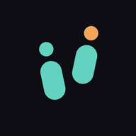

Adımlarını telefonundan ya da saatinden Health Connect üzerinden okuyan sade bir adım sayar. Günlük hedefini koyarsın, hedefi tuttuğun günler seriye dönüşür; kaçırdığın bir günde biriktirdiğin seri koruma hakkı seriyi korur.
Hesap açılmaz, adım verisi telefondan çıkmaz. Sırada arkadaşlarınla ya da bir toplulukla kodla katılınan etkinlikler ve yarışmalar var.
T-Steps Health Connect'ten yalnızca adım verisini okur ve yalnızca cihazda işler. Hesap, sunucu, reklam ve analitik bu sürümde yok; uygulama internet izni bile istemez. Ayrıntılar gizlilik politikasında.